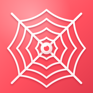
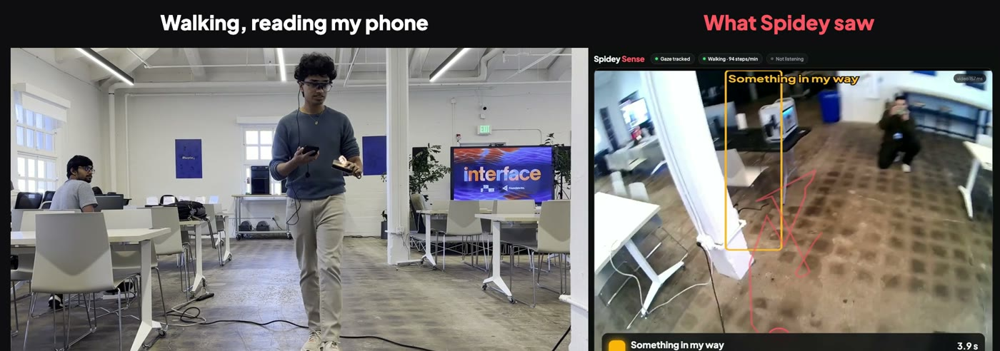
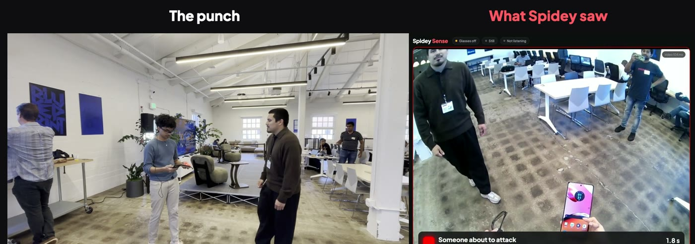

Amber buzz · 1.7 s
Reading my phone. Box ahead.
My eyes were on the phone (coral ring), so Spidey tapped me about the box. Look at it first, and it stays quiet.

Spidey SenseScenarios
My eyes were on the phone (coral ring), so Spidey tapped me about the box. Look at it first, and it stays quiet.

Buzzed before I reached it.

Danger gets a stronger buzz.


Say it, and Spidey writes the trigger.
The app


Under the hood
| Glasses video to the Mac | ~90 ms |
| Something in view to a buzz, in real takes | 1–2 s |
| Dot buzz over Bluetooth | 117 ms |
| Obstacles caught in 56 hand-labelled frames | 96% |
| Fist frames caught after rewording the trigger | 14 / 14 |